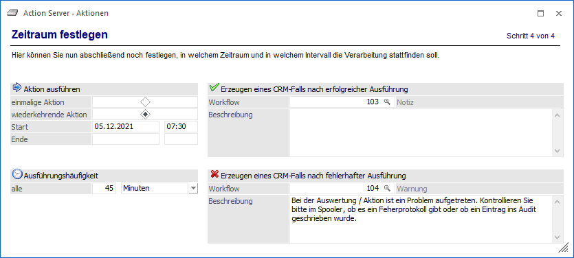
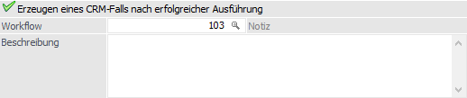
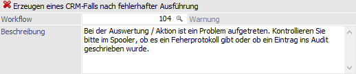

Im vierten und letzten Schritt des Assistenten kann festgelegt werden, ob es sich um eine einmalige oder eine wiederkehrende Aktion handelt.

In beiden Fällen muss ein Startdatum und eine Startzeit festgelegt werden. Bei einer wiederkehrenden Aktion kann zusätzlich ein Enddatum festgelegt werden.
Des Weiteren kann noch angegeben werden, in welchem Intervall die Aktion gestartet werden soll. Hier können Sekunden, Minuten, Stunden, Tage, Wochen und Monate eingegeben werden.
Erzeugen eines CRM-Falls nach erfolgreicher Ausführung

In diesem Bereich kann - sofern eine WinLine CRM-Lizenz vorhanden ist - ein Workflowschritt oder eine Aktion hinterlegt werden, die ausgeführt wird, wenn die Action-Server Aktion erfolgreich ausgeführt wird. Dabei wird "Erfolg:", der Typ der Aktion und der Name der Action Server Definition in die Kurzbezeichnung des Workflows (T170.C018) kopiert (z.B. Erfolg:.Export/Import: Belege). Zusätzlich wird das Ergebnis der Aktion in den Upload der Workflows / der Aktion gestellt.
Ø Workflow
Hier kann die Workflow- oder die Aktionsnummer hinterlegt werden, die ausgeführt werden soll. Durch Drücken der F9-Taste kann nach alle Workflows bzw. Aktionen gesucht werden.
Ø Beschreibung
Hier kann eine Beschreibung hinzugefügt werden, die dann im Workflow / in der Aktion in das Feld Langbezeichnung intern (T170.C019) kopiert wird.
Hinweis
Wenn hier ein Workflow oder eine Aktion hinterlegt wird, dann diese(r) bei jeder erfolgreichen Durchführung angestoßen. Bei zyklischen Abarbeitungen könnten daher dann auch viele Workflows/Aktionen angestoßen werden.
Erzeugen eines CRM-Falls nach fehlerhafter Ausführung

In diesem Bereich kann - sofern eine WinLine CRM-Lizenz vorhanden ist - ein Workflowschritt oder eine Aktion hinterlegt werden, die ausgeführt wird, wenn die Action-Server Aktion nicht ausgeführt werden konnte. Dabei wird "Fehler:", der Typ der Aktion und der Name der Action Server Definition in die Kurzbezeichnung des Workflows (T170.C018) kopiert (z.B. Fehler: Export/Import: Belege. Zusätzlich wird das Ergebnis der Aktion in den Upload der Workflows / der Aktion gestellt.
Ø Workflow
Hier kann die Workflow- oder die Aktionsnummer hinterlegt werden, die ausgeführt werden soll. Durch Drücken der F9-Taste kann nach alle Workflows bzw. Aktionen gesucht werden.
Ø Beschreibung
Hier kann eine Beschreibung hinzugefügt werden, die dann im Workflow / in der Aktion in das Feld Langbezeichnung intern (T170.C019) kopiert wird. Zusätzlich wird auch die Meldung, die zum Fehler geführt hat, in die Langbezeichnung intern (T170.C019) kopiert.
Hinweis
Wenn eine Aktion nicht erfolgreich ausgeführt werden kann, dann wird nur einmalig ein Workflow / eine Aktion angestoßen, auch wenn die Aktion weiterhin (nicht erfolgreich) ausgeführt wird.